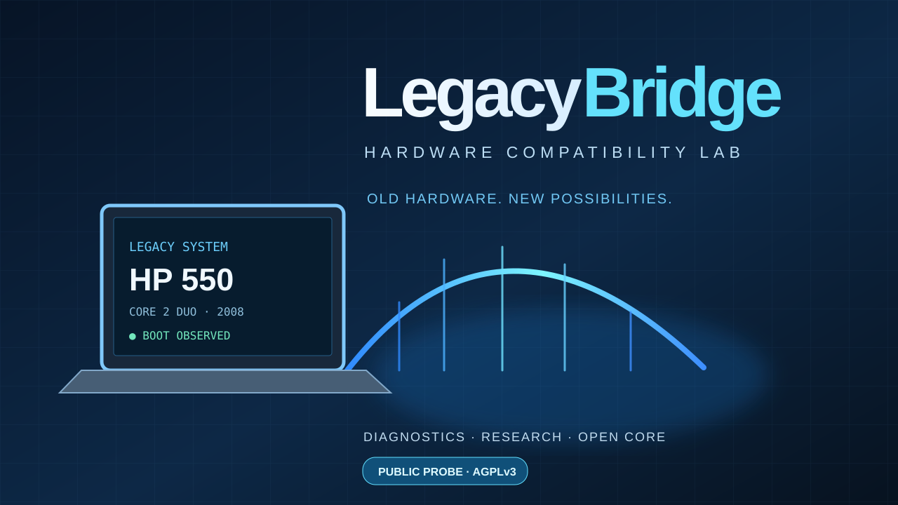

HP 550 and Windows 11: what blocks compatibility?
Can a 2008 Intel Core 2 Duo notebook still be useful? We document a practical revival project, CPU instruction-set limitations and the challenges of running modern Windows versions. No disk modifications and no claims of unachieved results.

1. What we have actually observed
Our HP 550 boots Windows 10 Pro 1909, 32-bit. We identified its Intel Core 2 Duo T5670 processor at 1.80 GHz, about 3 GiB of RAM and a legacy BIOS. Importantly, the processor supports 64-bit instructions despite the installed Windows edition being 32-bit.
| Laptop | HP 550, 2008 generation |
|---|---|
| CPU | Intel Core 2 Duo T5670, 1.80 GHz |
| Memory | Approximately 3 GiB |
| Booted OS | Windows 10 Pro 1909, 32-bit |
| CPU architecture | x64: confirmed |
| Firmware | Legacy BIOS |
| Storage | SATA device reporting “SSD 4TB”; actual capacity unverified, MBR partitions |
2. The real Windows 11 obstacle
Not every x64 processor supports every instruction expected by a recent 64-bit operating system. On newer Windows 11 releases, features such as POPCNT and SSE4.2 are significant barriers for older processors. Based on its CPU generation, we expect both to be absent; a direct CPUID measurement on this specific HP 550 is still pending.
Bypassing an installer hardware check cannot magically implement missing instructions. We have not booted Windows 11 on this laptop, and LegacyBridge is not presented as a working Windows 11 patcher.
3. Storage mystery: a drive claiming 4 TB
Windows reports a SATA device named “SSD 4TB”. Disk Management and DiskPart show an MBR partition layout and a capacity reported by its controller. Reported capacity does not establish actual physical storage capacity. This may reflect device identification, firmware behaviour or a discrepancy between advertised and real storage.
Back up data before any invasive testing. We are not converting partitions to GPT, formatting the drive or carrying out heavy write tests before the files are safe.
4. Next lab experiments
- Back up important data to a trusted device.
- Boot a 64-bit Linux Live environment from USB without installing onto internal storage.
- Measure CPU instruction flags using CPUID or Linux-provided features.
- Document RAM, boot times, drivers, memory use and limitations.
- Publish reproducible results, including unsuccessful tests.
5. Public code and license
LegacyBridge shares a small read-only PowerShell diagnostic probe for reporting CPU, memory, Windows version and disk model. The original public code is licensed under GNU AGPL-3.0-only. The full experimental lab remains separate, and no Windows ISOs, Microsoft DLLs or modified kernels are distributed.
View the public source and license ↗6. Technical references
To separate verified findings from speculation, we cross-check our observations with official technical documentation and describe how measurements were obtained.